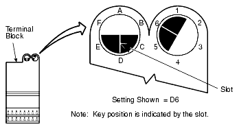
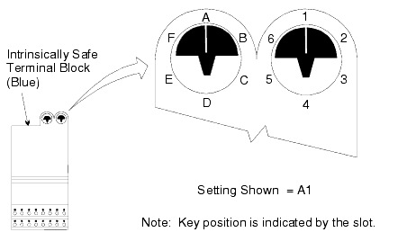

Figure from page 266 (page 266)

Figure from page 266 (page 266)

Figure from page 266 (page 266)

Figure from page 312 (page 312)

Figure from page 313 (page 313)
Source: DeltaV M-series Hardware Installation and Reference Manual, Emerson D800001X312, April 2021 — Appendix C (Interface Specifications), Sections C.6.1–C.6.6


This lesson covers the PLC-5/1771 I/O signal conditioning cards — special-purpose interface cards that allow DeltaV Series 2 Plus I/O modules to connect to existing Allen-Bradley PLC-5/1771 wiring infrastructure. These cards replace legacy 1771-series discrete I/O cards and provide electrical signal conditioning between high-voltage field signals and the DeltaV digital I/O cards.
Pages 260–262
Interfaces 16 analog 4-20 mA field transmitter channels to DeltaV AI 16-Channel 4-20 mA HART Series 2 Plus cards. Supports both 2-wire (field-powered) and 4-wire transmitters.
| Connector | Function |
|---|---|
| Field 48-Pin Mass Termblock | Field transmitter wiring connections |
| 24-Pin Ribbon Cable (Primary) | Connects to Primary AI Series 2 Plus card |
| 24-Pin Ribbon Cable (Secondary) | Connects to Secondary AI Series 2 Plus card (redundant) |
The card has two 24-pin ribbon-cable connectors: J1 (Rear) for Channels 1–8 and J2 (Front) for Channels 9–16.
| Rear Connector J1 | Front Connector J2 | ||
|---|---|---|---|
| Pin | Function | Pin | Function |
| 1 | Channel 1 Signal | 1 | Channel 9 Signal |
| 2 | No Connection | 2 | No Connection |
| 3 | Channel 2 Signal | 3 | Channel 10 Signal |
| 4 | No Connection | 4 | No Connection |
| 5 | Channel 3 Signal | 5 | Channel 11 Signal |
| 6 | No Connection | 6 | No Connection |
| 7 | Channel 4 Signal | 7 | Channel 12 Signal |
| 8 | No Connection | 8 | No Connection |
| 9 | Channel 5 Signal | 9 | Channel 13 Signal |
| 10 | No Connection | 10 | No Connection |
| 11 | Channel 6 Signal | 11 | Channel 14 Signal |
| 12 | No Connection | 12 | No Connection |
| 13 | Channel 7 Signal | 13 | Channel 15 Signal |
| 14 | No Connection | 14 | No Connection |
| 15 | Channel 8 Signal | 15 | Channel 16 Signal |
| 16 | No Connection | 16 | No Connection |
| 17 | Ch 1 DC GND | 17 | Ch 9 DC GND |
| 18 | Ch 2 DC GND | 18 | Ch 10 DC GND |
| 19 | Ch 3 DC GND | 19 | Ch 11 DC GND |
| 20 | Ch 4 DC GND | 20 | Ch 12 DC GND |
| 21 | Ch 5 DC GND | 21 | Ch 13 DC GND |
| 22 | Ch 6 DC GND | 22 | Ch 14 DC GND |
| 23 | Ch 7 DC GND | 23 | Ch 15 DC GND |
| 24 | Ch 8 DC GND | 24 | Ch 16 DC GND |
| Item | Specification |
|---|---|
| Field device type | 4-20 mA |
| Number of channels | 16 |
| Field signals | 2-wire and 4-wire field-powered transmitters |
| Electrical connections | Front: one 1771-WG/WH swing arm; Bottom: two 24-pin ribbon-cable connectors |
| Max input voltage per channel | 24 VDC |
| Max input current per channel | 30 mA |
| Dimensions (H × W × D) | 208 × 32 × 168 mm (8.2 × 1.3 × 6.6 in.) |
| Operating temperature | -40 to 60 °C |
| Storage temperature | -40 to 85 °C |
| Relative humidity | 5 to 95% non-condensing |
| Contaminant protection | ISA-S71.04-1985 Class G3 conformal coating |
| Shock | 10 g, ½-sine wave for 11 ms |
| Vibration | 1 mm p-p from 2 to 13.2 Hz; 0.7 g from 13.2 to 150 Hz |
Pages 263–265
Replaces the legacy 1771-IBD 24 VDC DI card. Provides an interface between 16 discrete input PLC signals and simplex or redundant Series 2 Plus DI, 32-Channel, 24 VDC, Dry Contact cards. Two cards required to connect all 32 channels of one Series 2 Plus DI card.
| Item | Specification |
|---|---|
| Field device type | 24 VDC dry contact |
| Number of channels | 16 |
| Isolation | Channels share a common ground return |
| Electrical connections | Front: one 1771-WH swing arm; Bottom: one 20-pin ribbon-cable connector |
| Nominal input current | 4.5 mA at 10 VDC; 15 mA at 30 VDC |
| Min ON-state voltage | 10 VDC |
| Min OFF-state voltage | 5 VDC |
| Input voltage range | 10–30 VDC |
| Max nominal input impedance | 2.2 kΩ |
| Dimensions (H × W × D) | 208 × 32 × 168 mm (8.2 × 1.3 × 6.6 in.) |
| Operating temperature | -40 to 60 °C |
| Shock | 10 g, ½-sine wave for 11 ms |
| Vibration | 1 mm p-p from 2 to 13.2 Hz; 0.7 g from 13.2 to 150 Hz |
Pages 265–268
Replaces the legacy 1771-IAD 120 VAC/VDC DI card. Converts 120 VAC/VDC discrete input signals to 24 VDC dry-contact signals for Series 2 Plus DI cards. Two cards required for all 32 channels.
A jumper switch on the bottom of the card sets the OFF-to-ON signal time delay:
| Setting | Delay | Default |
|---|---|---|
| 5 ms filter | 5 ms | Yes (default) |
| 20 ms filter | 20 ms | No |
| Item | Specification |
|---|---|
| Field device type | 120 VAC/VDC dry contact |
| Number of channels | 16 |
| Isolation | Field to system tested to 2,000 VDC for 2 s; channels share common return |
| Nominal input voltage | 120 VAC at 50/60 Hz; 125 VDC |
| Nominal input current | 9.9 mA at 120 VAC 60 Hz; 8.7 mA at 120 VAC 50 Hz; 2.56 mA at 125 VDC |
| ON-state voltage range | 79–138 VAC/VDC |
| Max OFF-state voltage | 43 VAC/VDC |
| Input impedance | 11.2 kΩ at 60 Hz |
| Input signal delay (OFF→ON) | 5 ms (default) or 20 ms via jumper |
| Dimensions (H × W × D) | 208 × 32 × 168 mm (8.2 × 1.3 × 6.6 in.) |
Pages 269–272
Replaces the legacy 1771-ID16 120 VAC/VDC DI card. Provides channel-group isolation — unlike the standard 120 VAC/VDC card, field-to-system isolation is tested to 2,000 VDC for 2 s with independent channel groups.
This card has two independent jumpers (J1 and J4):
| Jumper | Controls | Options | Default |
|---|---|---|---|
| J1 | Channels 1–8 | 5 ms or 20 ms | 20 ms |
| J4 | Channels 9–16 | 5 ms or 20 ms | 20 ms |
| Item | Specification |
|---|---|
| Field device type | 120 VAC/VDC dry contact |
| Number of channels | 16 |
| Isolation | Field to system tested to 2,000 VDC for 2 s |
| Electrical connections | Front: one 1771-WN swing arm; Bottom: one 20-pin ribbon-cable connector |
| Nominal input voltage | 120 VAC at 50/60 Hz; 125 VDC |
| Nominal input current | 9.9 mA at 120 VAC 60 Hz; 8.7 mA at 120 VAC 50 Hz; 2.56 mA at 125 VDC |
| ON-state voltage range | 79–138 VAC/VDC |
| Max OFF-state voltage | 43 VAC/VDC |
| Input impedance | 11.2 kΩ at 60 Hz |
| Dimensions (H × W × D) | 208 × 32 × 168 mm (8.2 × 1.3 × 6.6 in.) |
Pages 272–274
Replaces the legacy 1771-OBD 24 VDC DO card. Provides an interface between 16 discrete output PLC signals and DO 32-Channel, 24 VDC, High-Side, Series 2 Plus cards.
| Item | Specification |
|---|---|
| Field device type | 24 VDC high-side |
| Number of channels | 16 |
| Isolation | 1,000 VDC channel to system; channels share common ground return |
| Electrical connections | Front: one 1771-WH swing arm; Bottom: one 20-pin ribbon-cable connector |
| User supply voltage | 10–60 VDC |
| Output current rating | 2 A per channel, not to exceed 8 A per card |
| Max surge current | 4 A/channel for 10 ms (repeatable every 2 s); 25 A/card for 10 ms |
| Max ON-state voltage drop | 1.5 VDC at rated current |
| Min load current | 2.5 mA per channel |
| Max OFF-state leakage | 0.5 mA per channel |
| Dimensions (H × W × D) | 208 × 32 × 168 mm (8.2 × 1.3 × 6.6 in.) |
Pages 274–276
Replaces the legacy 1771-OAD 120 VAC DO card. Provides an interface between 16 discrete output PLC signals and DO 32-Channel, 24 VDC, High-Side, Series 2 Plus cards.
All PLC-5/1771 I/O signal conditioning cards share the same environmental ratings:
| Parameter | Specification |
|---|---|
| Operating temperature | -40 to 60 °C |
| Storage temperature | -40 to 85 °C |
| Relative humidity | 5 to 95% non-condensing |
| Contaminant protection | ISA-S71.04-1985 Class G3 conformal coating |
| Shock | 10 g, ½-sine wave for 11 ms |
| Vibration | 1 mm p-p from 2 to 13.2 Hz; 0.7 g from 13.2 to 150 Hz |
| Physical dimensions (all cards) | 208 × 32 × 168 mm (8.2 × 1.3 × 6.6 in.) |
| Card Type | Channels | Field Signal | Isolation | Jumper Config |
|---|---|---|---|---|
| AI 4-20 mA HART | 16 | 4-20 mA (2/4-wire) | Carrier isolation per channel | N/A |
| DI 24 VDC | 16 | 24 VDC dry contact | Common ground return | N/A |
| DI 120 VAC/VDC | 16 | 120 VAC/VDC dry contact | 2,000 VDC field-to-system | Single jumper: 5 ms / 20 ms |
| DI 120 VAC/VDC Isolated | 16 | 120 VAC/VDC dry contact | 2,000 VDC field-to-system | Two jumpers (J1, J4): independent 5 ms / 20 ms |
| DO 24 VDC | 16 | 24 VDC high-side | 1,000 VDC channel-to-system | N/A |
| DO 120 VAC | 16 | 120 VAC output | Channel isolation | N/A |
Q1: How many signal conditioning cards are required to connect all 32 channels of one Series 2 Plus DI 32-Channel card?
A1: Two cards — each handles 16 channels.
Q2: What is the default time-delay setting for the DI 120 VAC/VDC Isolated card, and which jumpers control it?
A2: The default is 20 ms. J1 controls channels 1–8 and J4 controls channels 9–16.
Q3: What type of transmitter does Emerson recommend for the AI 4-20 mA HART card, and why?
A3: Isolated four-wire transmitters are recommended. For DC-powered isolated 4-wire transmitters, the power supply return should be connected to DeltaV DC ground to prevent ground bounce from localized transients.
Q4: What is the physical dimension shared by all PLC-5/1771 I/O signal conditioning cards?
A4: 208 × 32 × 168 mm (8.2 × 1.3 × 6.6 in.) — Height × Width × Depth.
Reference: DeltaV M-series Hardware Installation and Reference Manual, Emerson D800001X312, April 2021 — Appendix C, Sections C.6.1–C.6.6 (pages 260–276)